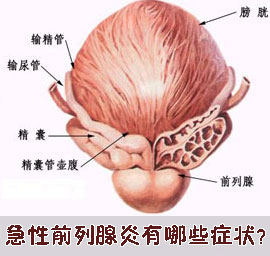

急性前列腺炎都有哪些症状？
来源：未知 作者：程序员 时间：2010-12-07 15：06 点击：126次
医院在男性泌尿生殖系常见的感染性疾病症状中，急性前列腺炎的症状出现的几率很高。急性前列腺炎的症状的致病菌以大肠杆菌为主，约占80%。急性前列腺炎的症状是由前列腺非特异性细菌感染所致的急性炎症所表现出来的，都属于前列腺炎的发病症状。
急性前列腺炎由于急性期症状往往比较明显，发病时患者可有尿频、尿急，同时伴有发热、疼痛等症状，使患者痛苦不堪，因此尽早治疗是关键，下面为大家详细介绍一下急性前列腺炎的症状。

急性前列腺炎都有哪些症状？
1、急性前列腺炎的症状有全身性的，主要表现为乏力、虚弱、厌食、恶心、呕吐、高热、寒战、虚脱或败血症表现。急性前列腺炎的症状突然发病时全身症状可掩盖局部症状。
2、局部的急性前列腺炎的症状有会阴或耻骨上区重压感，久坐或排便时加重，且局部的急性前列腺炎的症状有可能向腰部、下腹、背部、大腿等处放散。
3、在尿路中急性前列腺炎的症状有，排尿时灼痛、尿急、尿频、尿滴沥和脓性尿道分泌物。膀胱颈部水肿可致排尿不畅，尿流变细或中断，急性前列腺炎的症状严重时有尿潴留。
4、直肠胀满，便急和排便痛，大便时尿道流白这些也是急性前列腺炎的症状在直肠的表现。
前列腺专家提示：急性前列腺炎的症状还有性欲减退并可出现性交疼痛等，广大男性朋友，特别是正处于事业巅峰的中青年人，别忽视自身健康。如果有诸如尿频、尿急、尿痛以及其他症状时，一定要到正规的医疗机构做全面彻底的检查，自行用药或在一些小诊所进行不规范的治疗是根本没有康复希望的，一定要到正规医院进行专业治疗方可避免疾病造成更多的危害。
南宁中山医院（泌尿）专家提示广大患者，要正确对待男科疾病，不要等到疼痛时，才意识到疾病的危害，如不清楚自己是否患有男科疾病，建议您尽早咨询在线专家，在线专家将免费为您分析病情以免病情恶化。
 南宁中山医院是南宁市首家大型泌尿专科医院，是一所集临床、教学、科研、预防、保健、康复为一体的现代化专业男科医院。医院设施先进、专科齐全、技术力量雄厚、服务热情周到，是……
南宁中山医院是南宁市首家大型泌尿专科医院，是一所集临床、教学、科研、预防、保健、康复为一体的现代化专业男科医院。医院设施先进、专科齐全、技术力量雄厚、服务热情周到，是……